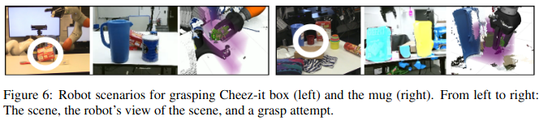
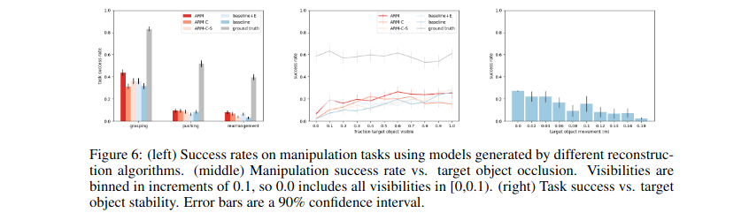
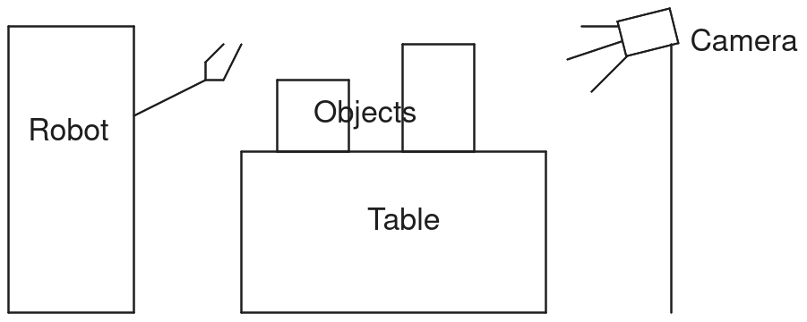

2024 Dec 20
A few weeks ago, we submitted the BRRP paper [1] to RA-L. We received an “Unsuitable” back for the paper. Essentially, the response said that the paper was a computer vision paper and not a robotics paper. Here is probably the most relevant paragraph from the response:
The paper seems to be relevant to computer vision. While the data, in particular, YCB objects are used in robotics, the paper focuses on the reconstruction. None of the mentioned downstream tasks of grasping or manipulating an object are shown. Furthermore, the paper does not explain why this method is relevant to robotics and automation and how it would improve operation of robots in this field. There are several references to RA-L or any other robotics/automation journal or conference, most of them include grasping or manipulation of objects.
I think it is pretty clear from the response that if we simply had an experiment with a downstream task, it would be relevant enough to robotics and this decision wouldn’t have happened. The response as a whole though, seemed to recommend submitting to a computer vision conference. However, I would probably rather try to hook this up to a downstream task. I also don’t know what the process is to submit a paper that has already been rejected.
Here are two papers that focus on reconstruction for robotics (both are CoRL papers)
Diverse Plausible Shape Completions from Ambiguous Depth Images [2]
By B. Saund and D. Berenson

Amodal 3D Reconstruction for Robotic Manipulation via Stability and Connectivity [3]
By W. Agnew, C. Xie, A. Walsman, O. Murad, C. Wang, P. Domingos, S. Srinivasa

Other: There are other robotics papers that focus on reconstruction that I didn’t list out here, such as [4] (IROS 2023), which showcases some grasps generated in simulation as well as reported some “grasping-related metrics” such as Grasp Collision Risk and Grasp Miss Risk. Of course there are also some robotics papers that don’t really do any downstream tasks such as V-PRISM [5] (IROS 2024) or maybe [6] (RA-L 2016).
Motion Planning in Simulation: It might not be too hard to simply set up a simulation experiment where we select a location in clutter to motion plan to and use the reconstructed geometries to compute a motion plan. We would want to keep track of two types of failure: (1) object collision during execution of motion plan and (2) failure to produce a motion plan that is not in collision with the reconstructions.
Simple Pushing: I know we have discussed different possible experiments to do. It would be nice, for a couple reasons, if we could keep the experiment as simple as possible. Perhaps some sort of pushing or motion planning. Grasping would also be great depending on how hard that is. After one of the weekly meetings I made this image, which is a sketch of a sort of pushing experiment we could do:

I think it helps showcase backside reconstruction to have the camera on the other side of the robot. I think we would push the first object until it hits the second maybe, but I can’t remember.
With Martin’s Pipeline (Collision Avoidance): Another hopefully straightforward thing we could do is use it during the motion planning with Martin’s pipeline. He is on vacation I guess, and I will be as well for the break, so this may require some coordination. Currently he is simply using the bounding box of objects as their collision geometry. We would replace that with our method here. One wrinkle is that he currently has the camera in a very specific position, which is more next to the arm than on the other side of the table. But that shouldn’t be too hard to change (hopefully).
Question: What are your thoughts? Which experiment would be the best for our purposes?
Here are some other notes: